MyICOMaker v1.0.1
도형·도구·효과로 아이콘을 그리고 .ico · .icns · PNG · SVG 로 내보내는 아이콘 디자이너
1. 시작하기
MyICOMaker 는 도형·도구·효과로 아이콘을 직접 그리고, 여러 크기를 담은 Windows .ico, macOS .icns, PNG 세트, SVG 로 내보내는 아이콘 디자이너입니다. Windows·macOS·Linux 데스크톱 앱(Tauri)과 웹 브라우저에서 같은 화면으로 동작합니다.
- 시작 화면에서 새 아이콘 또는 템플릿을 고릅니다.
- 왼쪽의 도구와 도형으로 캔버스(512×512)에 그립니다.
- 오른쪽에서 색·그러데이션·테두리·효과를 정합니다.
- ICO 내보내기로 아이콘 파일을 만듭니다.
작업 중인 디자인은 자동으로 보관되어, 다음에 시작 화면의 이어서 작업으로 바로 돌아갈 수 있습니다. 파일로 남기려면 Ctrl+S 로 .myico 디자인 파일에 저장하세요.
2. 시작 화면
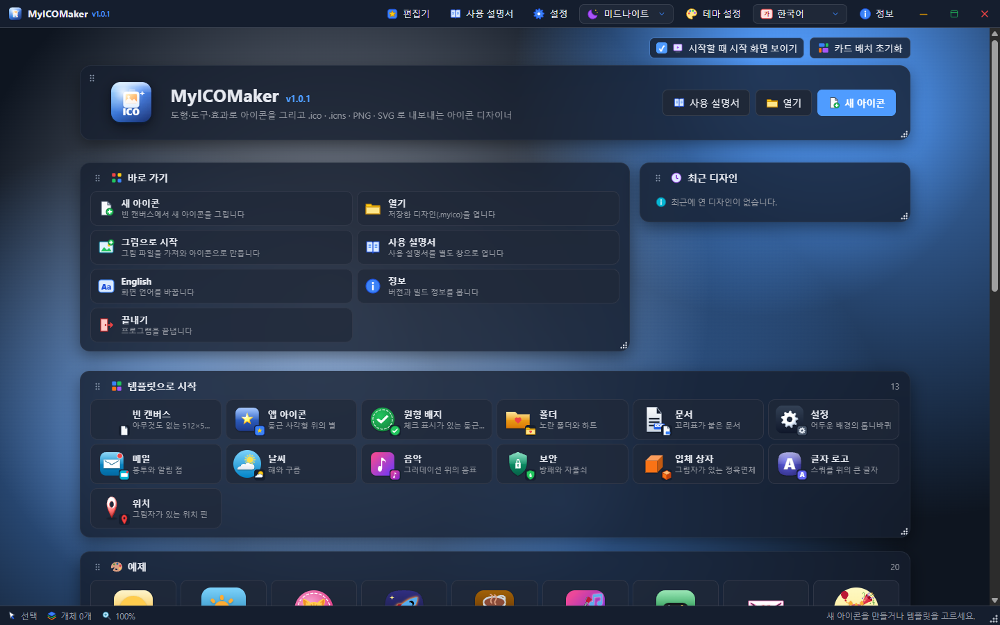
프로그램을 켜면 움직이는 배경 위에 반투명 카드들이 놓인 시작 화면이 나옵니다. 카드는 왼쪽 위 손잡이(⋮⋮)로 끌어 옮기고, 오른쪽 아래 모서리로 크기를 바꿉니다(모서리 더블클릭: 내용에 맞춤). 카드 배치 초기화로 처음 배치로 돌아갑니다.
- 바로 가기: 새 아이콘, 열기, 그림으로 시작, 이어서 작업, 사용 설명서, 언어 바꾸기, 정보, 끝내기
- 최근 디자인(데스크톱): 미리 보기 그림과 경로. ✕ 로 목록에서 빼기
- 템플릿으로 시작: 13가지 시작 디자인
- 테마: 어두운 테마 6개와 밝은 테마 6개
- 움직이는 배경: 20가지 배경, 무작위, 속도, 카드 불투명도
| 템플릿 | 내용 |
|---|---|
| 빈 캔버스 | 아무것도 없는 512×512 캔버스 |
| 앱 아이콘 | 둥근 사각형 위의 별 |
| 원형 배지 | 체크 표시가 있는 둥근 배지 |
| 폴더 | 노란 폴더와 하트 |
| 문서 | 꼬리표가 붙은 문서 |
| 설정 | 어두운 배경의 톱니바퀴 |
| 메일 | 봉투와 알림 점 |
| 날씨 | 해와 구름 |
| 음악 | 그러데이션 위의 음표 |
| 보안 | 방패와 자물쇠 |
| 입체 상자 | 그림자가 있는 정육면체 |
| 글자 로고 | 스쿼클 위의 큰 글자 |
| 위치 | 그림자가 있는 위치 핀 |
시작할 때 시작 화면 보이기를 끄면 다음부터 마지막 작업으로 바로 편집기가 열립니다. 편집기에서는 제목 표시줄의 시작 화면 단추로 언제든 돌아옵니다.
3. 예제
시작 화면의 예제 카드에는 도형·이모티콘·효과로 만든 완성된 아이콘 20개가 미리 보기 그림과 함께 있습니다. 누르면 새 디자인으로 열려서 마음대로 고쳐 쓸 수 있습니다(원본 예제는 바뀌지 않습니다).
- 웃는 앱
- 날씨
- 고양이 배지
- 로켓 발사
- 카페
- 음악
- 게임
- 러브레터
- 생일
- 피자 가게
- 친환경
- 우승
- 보안
- 사진
- 메모
- 쇼핑
- 반려동물 채팅
- 밤하늘
- 아이디어
- 불꽃 기록
내 예제
편집기 도구 모음의 예제로 저장을 누르면 지금 디자인이 내 예제로 저장되어 예제 카드 끝에 점선 테두리로 나옵니다. 마우스를 올리면 나오는 ✕ 로 지웁니다(확인을 묻습니다). 내 예제는 이 컴퓨터의 프로그램 저장소에 남습니다.
4. 편집기 화면
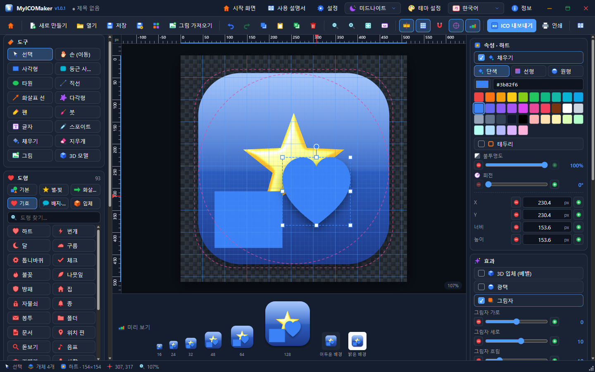
| 영역 | 설명 |
|---|---|
| 제목 표시줄 | 프로그램 이름·버전, 파일 이름(● 저장 안 됨), 시작 화면, 사용 설명서, 테마·언어 드롭다운, 정보, 최소화·최대화·닫기. 빈 곳을 끌면 창이 움직이고, 더블클릭하면 최대화됩니다. |
| 도구 모음 | 파일, 편집(실행 취소·다시 실행·복사·붙여넣기·복제·삭제), 보기(확대·축소·맞춤·100%·격자·맞추기·안내선·미리 보기), ICO 내보내기, 인쇄. 창이 좁으면 글자가 숨고 아이콘만 남습니다. |
| 왼쪽 패널 | 도구, 도형(분류·찾기), 레이어 |
| 캔버스 | 512×512 디자인 영역. 체크 무늬는 투명한 부분이고 캔버스 바탕·체크 무늬·격자·눈금자 색은 테마를 따릅니다. 위쪽과 왼쪽 눈금자에 마우스 위치가 붉은 표시로 나옵니다. 격자는 확대·축소에 맞춰 큰 칸을 다시 고르고, 큰 칸마다 5×5 작은 칸으로 다시 그립니다(맞추기는 작은 칸에 붙습니다). 아래쪽 미리 보기 줄에 16~128 픽셀과 어두운/밝은 배경 위의 모습이 바로 나옵니다. |
| 오른쪽 패널 | 속성, 효과, 정렬·배치, 배경, 내보내기 |
| 상태 표시줄 | 현재 도구, 개체 수, 선택한 개체, 포인터 위치, 배율, 알림. 오른쪽 끝 손잡이로 창 크기를 바꿉니다. |
5. 도구
도구는 14가지이고, 영문 단축키로도 고를 수 있습니다. 그린 뒤에는 자동으로 선택 도구로 돌아갑니다.
| 도구 | 키 | 쓰는 법 |
|---|---|---|
| 선택 | V | 개체를 골라 옮기고, 손잡이로 크기를 바꾸고 회전합니다 |
| 손 (이동) | H | 캔버스를 끌어 화면을 옮깁니다 (Alt+끌기, 가운데 버튼도 됩니다) |
| 사각형 | R | 사각형을 끌어 그립니다 |
| 둥근 사각형 | U | 둥근 사각형을 끌어 그립니다 |
| 타원 | O | 타원을 끌어 그립니다 (Shift: 원) |
| 직선 | L | 직선을 그립니다 (Shift: 45° 단위) |
| 화살표 선 | A | 끝에 화살촉이 있는 선을 그립니다 |
| 다각형 | G | 클릭으로 꼭짓점을 찍고 더블클릭·Enter 로 끝냅니다 (Esc: 취소) |
| 펜 | P | 자유롭게 선을 그립니다 |
| 붓 | B | 굵고 반투명한 붓으로 칠합니다 |
| 글자 | T | 클릭한 곳에 글자를 넣습니다 |
| 스포이트 | I | 개체를 클릭해 그 색을 새 도형 색으로 가져옵니다 |
| 채우기 | K | 클릭한 개체를 현재 색으로 칠합니다 |
| 지우개 | E | 클릭하거나 문질러 개체를 지웁니다 |
| 그림 | 그림 파일(PNG, JPG, SVG, ICO, BMP, WebP, AVIF, TIFF, HEIC, DICOM)을 개체로 가져옵니다. 캔버스로 파일을 끌어 놓거나 클립보드의 그림을 Ctrl+V 로 붙여 넣어도 됩니다. |
선택한 개체는 8개의 손잡이로 크기를 바꾸고(모서리 + Shift: 비율 유지), 위쪽 둥근 손잡이로 회전합니다(Shift: 15° 단위). 맞추기를 켜면 격자 눈금에 붙습니다.
6. 도형
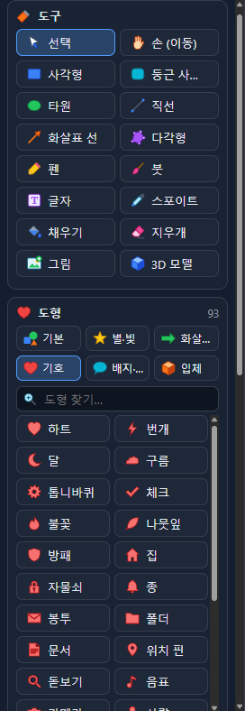
도형은 모두 93가지로, 여섯 분류로 나뉩니다. 단추는 그 도형의 모양을 색으로 보여 줍니다. 도형 찾기 칸에 이름을 넣으면 모든 분류에서 찾습니다. 도형을 고르고 캔버스에서 끌어 그립니다(Shift: 같은 비율, 그냥 클릭: 160×160).
기본 (20)
- 삼각형
- 직각삼각형
- 마름모
- 사다리꼴
- 평행사변형
- 오각형
- 육각형
- 칠각형
- 팔각형
- 십각형
- 반원
- 부채꼴
- 사분원
- 고리
- 액자
- 더하기
- 캡슐
- 물방울
- 스쿼클
- 엑스
별·빛 (10)
- 네모 별
- 별
- 육각 별
- 팔각 별
- 십이각 별
- 폭발
- 인증 도장
- 해
- 꽃
- 반짝임
화살표 (12)
- 오른쪽 화살표
- 왼쪽 화살표
- 아래 화살표
- 위 화살표
- 좌우 화살표
- 상하 화살표
- 갈매기
- 오각 화살표
- 재생
- 빨리 감기
- 유턴
- 새로 고침
기호 (30)
- 하트
- 번개
- 달
- 구름
- 톱니바퀴
- 체크
- 불꽃
- 나뭇잎
- 방패
- 집
- 자물쇠
- 종
- 봉투
- 폴더
- 문서
- 위치 핀
- 돋보기
- 음표
- 카메라
- 사람
- 전구
- 시계
- 배터리
- 무한대
- 트로피
- 휴지통
- 와이파이
- 달력
- 왕관
- 보석
배지·말풍선 (9)
- 말풍선
- 네모 말풍선
- 생각 풍선
- 꼬리표
- 책갈피
- 깃발
- 띠
- 메달
- 티켓
입체 (12)
- 정육면체
- 원기둥
- 구
- 원뿔
- 피라미드
- 삼각기둥
- 육각기둥
- 반구
- 도넛
- 동전
- 팔면체
- 입체 캡슐
입체 도형은 고른 채우기 색으로 밝은 면·어두운 면을 자동으로 만듭니다.
7. 이모티콘
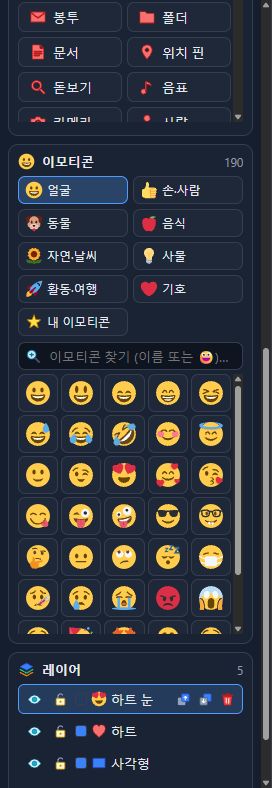
왼쪽 패널의 이모티콘 카드에 190개의 컬러 이모티콘이 8개 분류로 들어 있습니다. 누르면 캔버스 가운데에 놓이고 선택됩니다. 이모티콘은 벡터 그림이라 어떤 크기로 내보내도 선명하고, 도형처럼 옮기기·크기·회전·뒤집기·그림자·빛번짐 같은 효과를 쓸 수 있습니다. 찾기 칸에 이름(한국어·영어)이나 이모티콘 문자(😀)를 넣어 찾습니다.
| 분류 | 개수 | 예 |
|---|---|---|
| 얼굴 | 40 | 😀 😃 😄 😁 😆 😅 😂 🤣 😊 😇 🙂 😉 … |
| 손·사람 | 14 | 👍 👎 👏 🙌 👋 ✌ 👌 🤞 💪 🙏 🤝 👆 … |
| 동물 | 25 | 🐶 🐱 🐭 🐰 🦊 🐻 🐼 🐨 🐯 🦁 🐮 🐷 … |
| 음식 | 23 | 🍎 🍊 🍋 🍌 🍉 🍇 🍓 🍒 🍑 🍍 🥑 🥕 … |
| 자연·날씨 | 20 | ☀ 🌙 ⭐ 🌟 ☁ ⛅ 🌈 ⚡ ❄ 🔥 💧 🌊 … |
| 사물 | 26 | 📱 💻 ⌨ 🖥 📷 🎥 📺 🔋 💡 📚 📝 📎 … |
| 활동·여행 | 18 | ⚽ 🏀 ⚾ 🎾 🎮 🎲 🎯 🎵 🎸 🎨 🚀 ✈ … |
| 기호 | 24 | ❤ 🧡 💛 💚 💙 💜 💔 💖 ✨ 💯 ✅ ❌ … |
내 이모티콘 — 필요한 것을 직접 추가
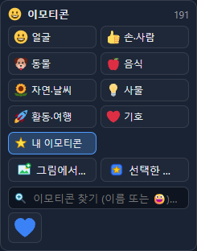
내 이모티콘 탭에서 그림에서 추가로 PNG·SVG 같은 그림 파일을 여러 개 한꺼번에 넣거나, 선택한 개체 추가로 캔버스에서 고른 개체를 벡터 그대로 저장합니다. 저장한 것은 다른 이모티콘처럼 눌러서 넣고, 마우스를 올리면 나오는 ✕ 로 지웁니다. 큰 그림은 256 픽셀로 줄여 저장합니다.
이모티콘 그림: Twemoji (© Twitter, Inc. 및 기여자, CC-BY 4.0)
8. 3D 모델
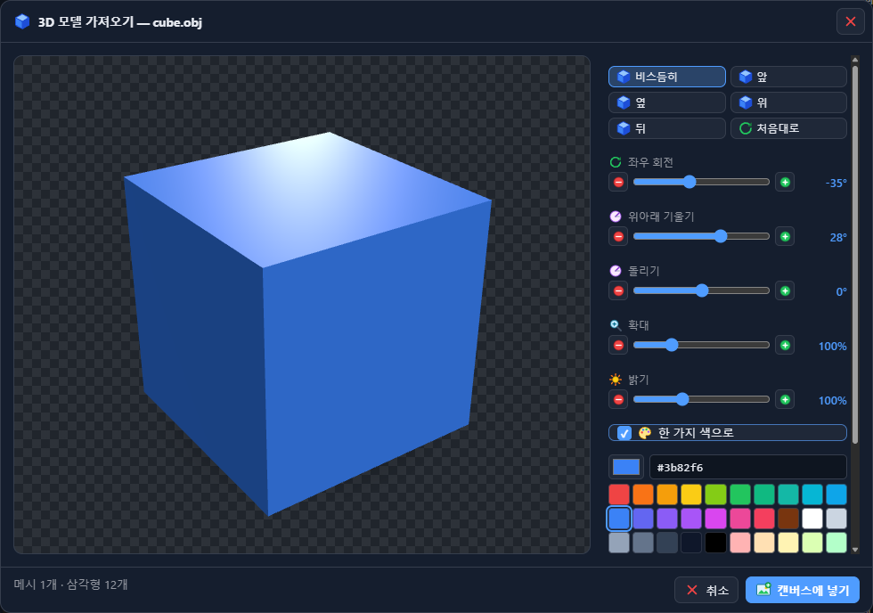
도구 카드의 3D 모델 단추나 파일 끌어다 놓기로 3D 모델 파일을 엽니다. 읽을 수 있는 형식: OBJ, STL, PLY, GLB, GLTF, FBX, DAE, 3MF, 3DS, AMF, WRL. 가져오기 창 왼쪽에 모델이 나오고, 끌어서 돌리고 휠로 확대·축소합니다. 오른쪽에서 보는 방향(비스듬히·앞·옆·위·뒤), 좌우 회전·위아래 기울기·돌리기, 확대, 밝기, 한 가지 색으로(색 고르기), 와이어프레임, 바닥 그림자를 정합니다. 캔버스에 넣기를 누르면 지금 모습이 1024 픽셀, 투명 배경 그림으로 캔버스에 들어갑니다.
glTF(.gltf)는 그림과 버퍼가 파일 안에 들어 있는 것만 읽습니다. 여러 파일로 된 모델은 .glb 로 바꿔서 여세요.
9. 끌어다 놓기
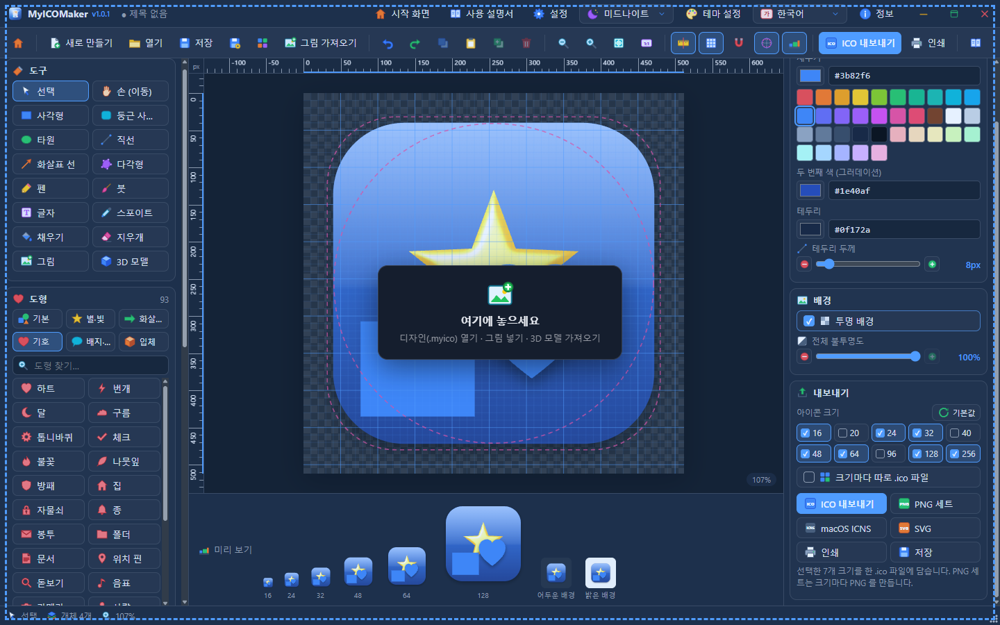
탐색기 등에서 파일을 프로그램 창 아무 곳에나 끌어다 놓을 수 있습니다. 끄는 동안 창에 여기에 놓으세요 표시가 나옵니다.
- 디자인(.myico): 엽니다(저장하지 않은 변경이 있으면 먼저 묻습니다).
- 그림(PNG·JPG·SVG·ICO·TIFF·HEIC·DICOM 등): 캔버스에 놓입니다. 여러 개를 한꺼번에 놓을 수 있습니다.
- 3D 모델(OBJ, STL, PLY, GLB, GLTF, FBX, DAE, 3MF, 3DS, AMF, WRL): 3D 모델 가져오기 창이 열립니다.
- 그 밖의 파일은 열 수 없다고 상태 표시줄에 알려 줍니다.
클립보드의 그림은 Ctrl+V 로 붙여 넣습니다.
10. 레이어
레이어 목록은 맨 앞 개체가 위에 옵니다. 눈 단추로 숨기기·보이기, 자물쇠로 잠그기(잠긴 개체는 캔버스에서 골라지지 않습니다), 화살표로 앞·뒤, 휴지통으로 삭제합니다. 숨긴 개체는 내보내기에도 빠집니다.
11. 속성과 효과
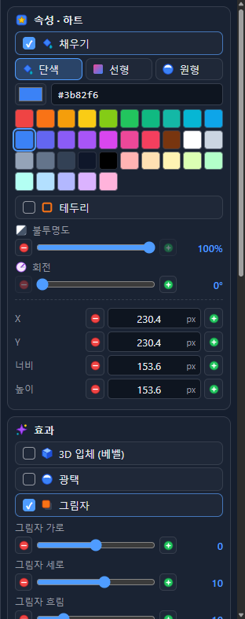
개체를 고르지 않았을 때 오른쪽 패널은 새 도형의 색(채우기·두 번째 색·테두리·두께)을 정합니다. 개체를 고르면 그 개체의 속성이 나옵니다.
- 채우기: 단색, 선형 그러데이션(각도), 원형 그러데이션. 색은 색상 상자, HEX 값, 35개의 견본으로 고릅니다.
- 테두리: 색, 두께, 실선·파선·점선
- 사각형: 모서리 반지름 / 선: 시작·끝 화살촉 / 다각형: 닫힘 / 글자: 내용, 글꼴, 크기, 굵게, 기울임
- 불투명도, 회전, 그리고 X·Y·너비·높이(− / + 단추나 직접 입력)
효과
- 3D 입체(베벨): 깊이와 빛의 위치
- 광택: 위쪽 절반에 유리 같은 반사
- 그림자: 가로·세로 거리, 흐림, 진하기, 색
- 빛번짐: 크기와 색
- 흐림
12. 정렬과 배치
캔버스 기준 왼쪽·가로 가운데·오른쪽·위·세로 가운데·아래 정렬, 좌우·상하 뒤집기, 90° 회전, 맨 앞·맨 뒤·앞으로·뒤로, 가운데로, 캔버스 채우기, 복제, 삭제를 할 수 있습니다. 개체를 오른쪽 클릭해도 같은 메뉴가 나옵니다.
13. 배경
기본은 투명 배경입니다. 끄면 배경색(또는 두 색 그러데이션), 모양(사각형·원), 여백, 모서리 둥글기를 정할 수 있습니다. 전체 불투명도는 그림 전체에 적용됩니다.
14. 내보내기
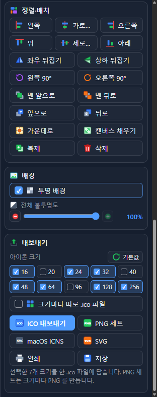
| 형식 | 설명 |
|---|---|
| ICO | 고른 크기(16, 20, 24, 32, 40, 48, 64, 96, 128, 256)를 한 .ico 파일에 담습니다. 크기마다 따로를 켜면 크기별 .ico 를 만듭니다(데스크톱: 폴더, 웹: ZIP). |
| PNG 세트 | 고른 크기마다 PNG 를 만듭니다. |
| macOS ICNS | 16~1024 픽셀을 모두 담은 .icns |
| SVG | 크기와 상관없는 벡터 그림 |
기본값 단추는 크기 선택을 16·24·32·48·64·128·256 으로 되돌립니다.
15. 인쇄
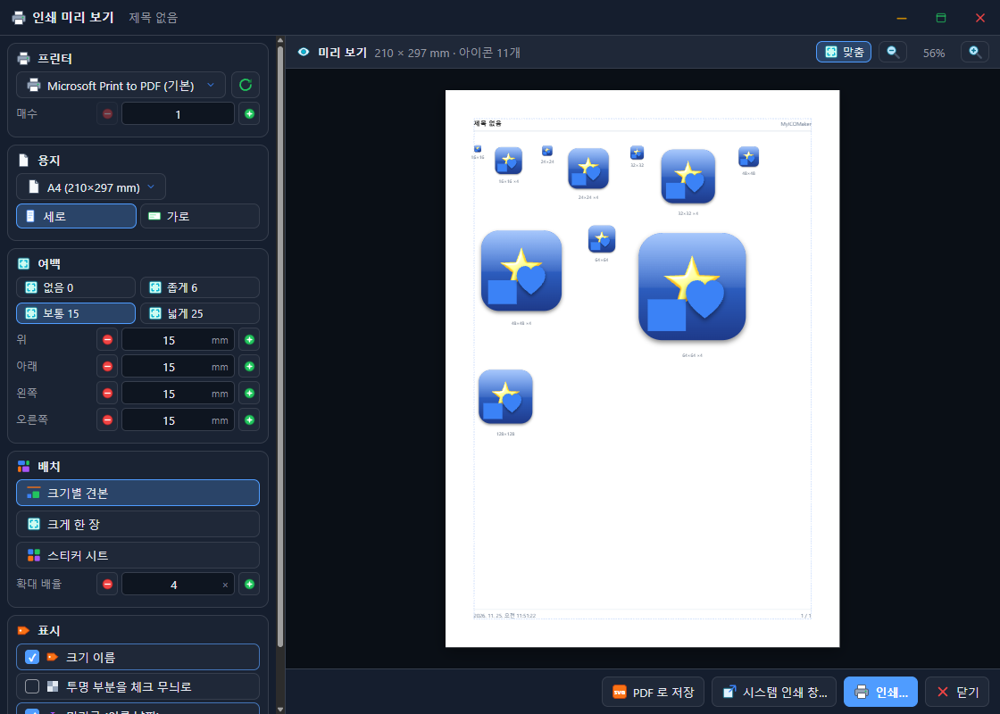
도구 모음·내보내기 카드의 인쇄 단추나 Ctrl+P 로 인쇄 창이 따로 열립니다. 왼쪽에서 정하고 오른쪽 미리 보기로 확인합니다(맞춤, 확대·축소, 점선은 여백).
- 프린터: 설치된 프린터 목록(기본 프린터 표시, 새로 고침)과 매수
- 용지: A3, A4, A5, B4, B5, Letter, Legal, Tabloid, 사용자 지정 크기(너비·높이 mm), 세로·가로
- 여백: 없음·좁게·보통·넓게, 위·아래·왼쪽·오른쪽 따로(mm)
- 배치: 크기별 견본(실제 크기와 확대 배율), 크게 한 장(크기 %), 스티커 시트(스티커 크기, 간격, 자르는 선)
- 표시: 크기 이름, 체크 무늬, 머리글(이름), 바닥글(날짜·쪽)
인쇄는 고른 프린터로 바로 보냅니다. 시스템 인쇄 창…은 운영 체제의 인쇄 창을, PDF 로 저장은 같은 페이지를 PDF 파일로 만듭니다. 편집기에서 다시 인쇄를 누르면 미리 보기가 새 디자인으로 바뀝니다.
사용 설명서 인쇄
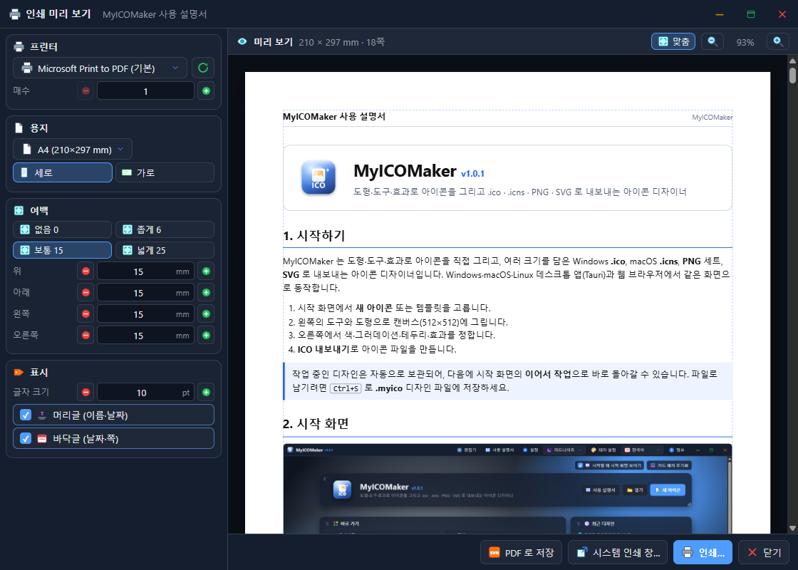
사용 설명서는 도구 모음·제목 표시줄·시작 화면의 사용 설명서 단추나 F1 로 따로 열리는 창입니다. 그 창의 인쇄 단추(Ctrl+P)를 누르면 같은 인쇄 창이 설명서를 인쇄하는 모습으로 열립니다. 설명서는 고른 용지와 여백에 맞춰 쪽으로 나뉘고(제목이 쪽 끝에 홀로 남지 않고, 긴 표는 다음 쪽에서 머리글 줄을 다시 보여 줍니다), 미리 보기에 모든 쪽이 나옵니다. 아이콘에만 쓰는 배치·크기 이름·체크 무늬 대신 글자 크기(pt)를 정합니다. 프린터·매수·용지·여백·머리글·바닥글(날짜·쪽 번호)과 바로 인쇄·시스템 인쇄 창·PDF 저장은 그대로입니다.
16. 파일
디자인은 .myico 파일(JSON)로 저장합니다. 가져온 그림도 파일 안에 함께 들어가므로 원본 그림을 옮겨도 괜찮습니다. 설치하면 .myico 파일을 두 번 클릭해 바로 열 수 있습니다. 저장하지 않은 변경이 있으면 새로 만들기·열기·끝내기 전에 물어봅니다.
가져올 수 있는 그림: PNG, JPG, GIF, WebP, BMP, ICO, CUR, SVG, AVIF, APNG, TIFF, HEIC/HEIF, DICOM(.dcm).
17. 설정과 테마
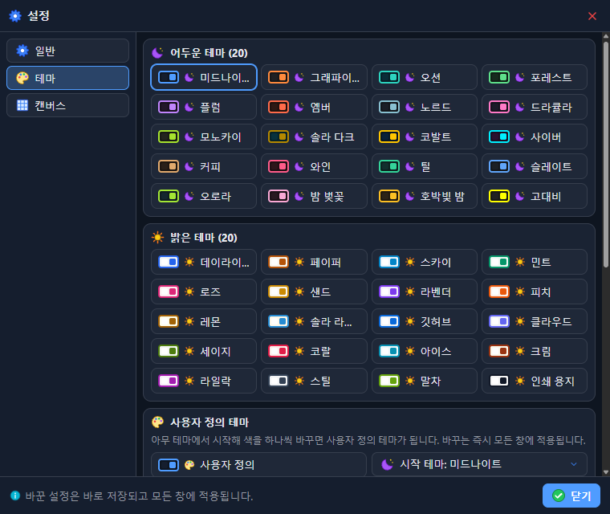
제목 표시줄의 설정 단추는 설정 창을 따로 엽니다(일반 · 테마 · 캔버스). 테마 설정 단추는 바로 테마 탭을 엽니다. 테마는 어두운 테마 20개와 밝은 테마 20개(미드나이트, 그래파이트, 오션, 포레스트, 플럼, 엠버, 노르드, 드라큘라, 모노카이, 솔라 다크, 코발트, 사이버, 커피, 와인, 틸, 슬레이트, 오로라, 밤 벚꽃, 호박빛 밤, 고대비, 데이라이트, 페이퍼, 스카이, 민트, 로즈, 샌드, 라벤더, 피치, 레몬, 솔라 라이트, 깃허브, 클라우드, 세이지, 코랄, 아이스, 크림, 라일락, 스틸, 말차, 인쇄 용지), 그리고 사용자 정의 테마가 있습니다. 사용자 정의 테마는 시작 테마를 고른 뒤 배경·패널·글자·강조색·캔버스 바탕·체크 무늬·격자·눈금자 등의 색을 하나씩 바꿔 만듭니다. 바꾸는 즉시 메인 창, 설정 창, 인쇄 창, 사용 설명서 창이 모두 같은 테마로 바뀝니다. 언어(한국어·English)는 제목 표시줄 드롭다운이나 설정 창에서 바꿉니다. 설정과 창의 위치·크기는 다음 실행 때도 유지됩니다.
18. 단축키
| 키 | 동작 |
|---|---|
| Ctrl+N | 새로 만들기 |
| Ctrl+O | 열기 |
| Ctrl+S | 저장 |
| Ctrl+Shift+S | 다른 이름으로 |
| Ctrl+Z | 실행 취소 |
| Ctrl+Y / Ctrl+Shift+Z | 다시 실행 |
| Ctrl+C | 복사 |
| Ctrl+V | 붙여넣기 |
| Ctrl+D | 복제 |
| Delete | 삭제 |
| Esc | 선택 해제 |
| ← ↑ → ↓ (Shift) | 선택한 개체를 1px (10px) 옮기기 |
| Ctrl++ / Ctrl+− | 확대 / 축소 |
| Ctrl+0 | 맞춤 |
| 마우스 휠 | 확대·축소 |
| Alt+끌기, 가운데 버튼 | 손 (이동) |
| Ctrl+E | ICO 내보내기 |
| Ctrl+P | 인쇄 |
| F1 | 사용 설명서 |
| V | 선택 |
| H | 손 (이동) |
| R | 사각형 |
| U | 둥근 사각형 |
| O | 타원 |
| L | 직선 |
| A | 화살표 선 |
| G | 다각형 |
| P | 펜 |
| B | 붓 |
| T | 글자 |
| I | 스포이트 |
| K | 채우기 |
| E | 지우개 |
19. 설치와 제거
Windows 설치 파일 MyICOMaker-Setup-1.0.1.exe 를 실행하면 먼저 설치 언어(한국어 / English)를 고릅니다. 고른 언어로 설치가 진행되고, 프로그램도 처음에 그 언어로 시작합니다. 이전 설치가 있으면 지우고 다시 설치할지, 사용자 데이터를 지울지 묻습니다. 바로가기(바탕 화면, 시작 메뉴 — 사용 설명서 포함)를 고를 수 있습니다.
20. 문제 해결
- 내보낸 아이콘이 흐립니다: 작은 크기(16, 24)에서는 가는 선이 뭉개집니다. 테두리를 두껍게 하고 단순한 모양을 쓰세요. 미리 보기 줄에서 실제 크기를 확인할 수 있습니다.
- 그림이 열리지 않습니다: 지원하는 형식인지 확인하세요. 압축된 DICOM 은 읽지 못합니다.
- 창이 화면 밖에 있습니다: 모니터가 바뀌면 다음 실행 때 가운데에 다시 놓입니다.